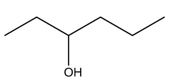

Função
Em química, o álcool é uma classe de compostos orgânicos que contém um ou mais grupos hidroxila (-OH) ligados a um átomo de carbono. A função dos álcoois varia dependendo do contexto, mas algumas funções principais incluem:
- Solvente: Dissolve substâncias polares e apolares.
- Reagente: Participa de reações, formando aldeídos, cetonas e ésteres.
- Combustível: Etanol é usado como biocombustível.
- Antisséptico: Desinfeta ao desnaturar proteínas.
- Precursor: Serve para sintetizar outros compostos, como éteres e haletos.